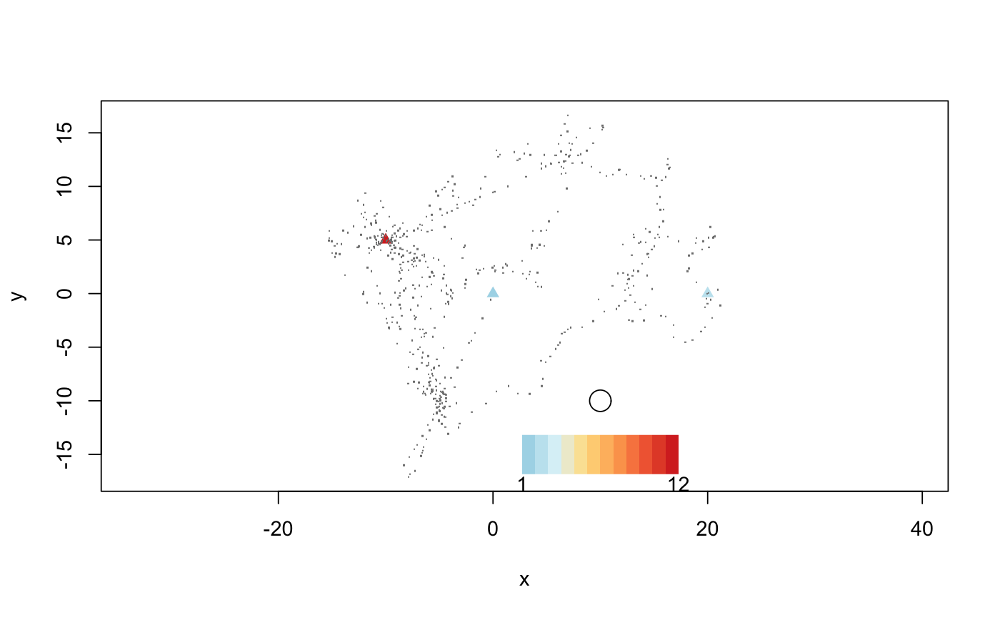

A circle of radius R is drawn around each specified location. The number of revisits is calculated as the number of segments of the trajectory passing through that circle.
getRecursionsAtLocations(x, locations, radius, threshold = 0, timeunits = c("hours", "secs", "mins", "days"), verbose = TRUE) # S3 method for data.frame getRecursionsAtLocations(x, locations, radius, threshold = 0, timeunits = c("hours", "secs", "mins", "days"), verbose = TRUE) # S3 method for Move getRecursionsAtLocations(x, locations, radius, threshold = 0, timeunits = c("hours", "secs", "mins", "days"), verbose = TRUE) # S3 method for MoveStack getRecursionsAtLocations(x, locations, radius, threshold = 0, timeunits = c("hours", "secs", "mins", "days"), verbose = TRUE)
| x | Either a data frame, Move-class, or MoveStack object. For a data frame, the trajectory data with four columns (the x-coordinate, the y-coordinate, the datetime, and the animal id). |
|---|---|
| locations | A data frame with x and y locations at which to calculate the recursions. |
| radius | numeric radius to use in units of the (x,y) location data to detect recursions. |
| threshold | a time difference (in units |
| timeunits | character string specifying units to calculate time differences in for the time spans inside the radius and since the
visit in |
| verbose |
|
A list with several components, revisits and residenceTime
are vectors of the same length as the x dataframe. revisits is the number of revisits for each
location, where 1 means that there were
no revisits, only the initial visit. residenceTime is the total time spent withing the radius. radius
is the specified radius used for all the calculations. timeunits is the specified time units used to specify
timespans.
When verbose = TRUE, additional information
is also returned, dists and revisitStats. Next, dists gives the distance matrix between
all locations. Finally, revisitStats gives further statistics on each visit. These are calculated
per location (i.e., no aggregation of nearby points is performed), and give the index and location
of the point of the track at the center of the radius, the radius entrance and exit time of the track for that
visit, how much time was spent inside the radius, and how long since the last visit (NA for the first visit).
For specified location, a circle of radius R is drawn around that point. This method differs
from getRecursions in that only specified locations are used, rather than all points in the
trajectory.
Then the number of segments of the trajectory passing through that circle is counted. This is
the number of revisits to that location. For each
revisit, the time spent inside the circle is calculated, as well as the time since the last
visit (NA for the first visit). In order to calculate the time values, the crossing time of the
radius is calculated by assuming linear movement at a constant speed between the points inside
and outside the circle.
Projection. Consider the projection used. Since segments are counted passing through circles
drawn around points, an equal area projection would ensure similar size comparisons (e.g., spTransform).
Either single or multiple individuals are supported, but be aware that this function will be slow with
large amounts of data (e.g. millions of points), so consider pre-specifying the locations
(getRecursionsAtLocations) or use clustering. Multiple individuals are handled via the id column of the
data.frame or using a MoveStack object.
data.frame: Get recursions at specified locations for a data.frame object
Move: Get recursions at specified locations for a Move-class object
MoveStack: Get recursions at specified locations for a MoveStack object
data(martin) locations = data.frame(x = c(-10, 0, 20), y = c(5, 0, 0)) revisits = getRecursionsAtLocations(martin, locations, radius = 1) plot(revisits, locations, legendPos = c(10, -15), alpha = 1, pch = 17, xlim = range(martin$x), ylim = range(martin$y))points(martin$x, martin$y, pch = ".", col = "gray50")